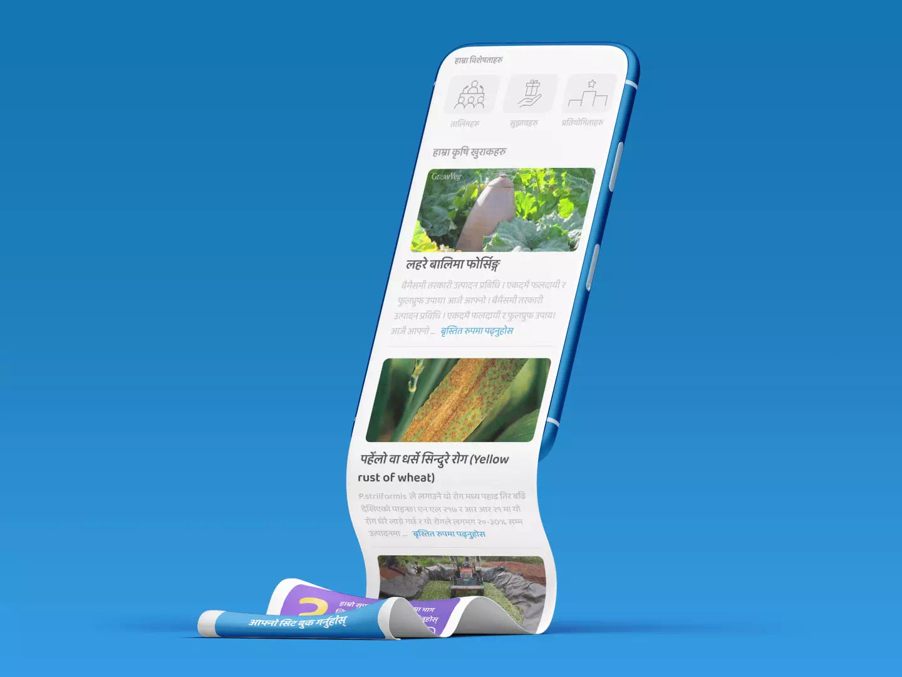

Objective
Gham Power needed an efficient way to deliver agri-advisory to its network of rural small-holder farmers in Nepal. While they had been providing training for years, there was no system to measure farmer engagement or track whether farmers implemented what they learned. The app needed to gamify the learning experience and provide accessible information in the local language.
My Role
Lead DesignerUI/ UX DesignFeature PlanningDesign Handover
Process
Market ResearchCompetitive AnalysisField StudyExpert Collaboration Iterative Design
Deliverables
Gamified LearningAgri-feed PlatformBespoke CSMMobile UI
Challenges
We needed to increase farmer involvement and track implementation of training. Farmers lacked access to reliable information in their local language. We also needed a control center to manage all ongoing processes while making the learning experience enjoyable enough to sustain engagement.
Approach
We analyzed top farming apps in Nepal and India to understand what farmers were already using. On-site visits to rural farmers helped us understand their information needs and technology comfort. Close collaboration with Gham Power's agri-experts ensured technical accuracy and relevance. We discussed wireframes and prototypes extensively with the agri-team before development.
1/4
Understanding the users
Field research and ethnographic observations
2/4
Gamification that motivates
Increased learning engagement with rewards, competition, and clear goals

3/4
Accessible information library
Agri-feed gave famers timely local informaiton in organized structures
4/4
Comprehensive system control
The back-end was an all-in-one CRM and control center for simpler management
This was my first try at gamifying content. And the more I worked on the app, the more I realized that while universal gamification principles are a great start, not all levers work the same for all user groups. Here are some of the key learning that I am proud of.
© 2026 Apurba Neupane
{kind=link}
{kind=link}
{kind=link}
{kind=link}
{kind=link}
{kind=link}
{kind=link}
{kind=link}
{kind=link}